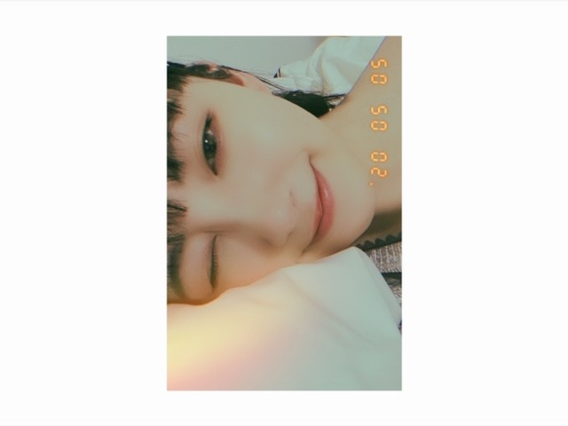
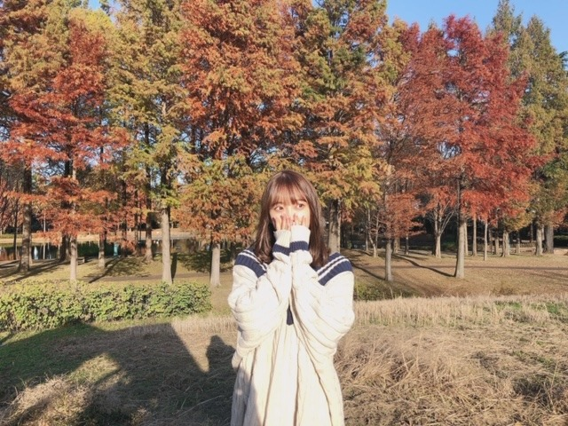

2020/0506Wedわらいかた
昨日母の日じゃなかったんですね
てっきり母の日だと勘違いしていて
お母さんに手紙を渡して
母の日だからメイクしてあげる〜って
メイクをしてあげて2ショットも撮って
母の日お母さん喜んでくれたかなぁと
思ってたんですけど
寝る直前にネットでたまたま
母の日までもうすぐ!
というのをみて
...え？
となりまして...
日にちを
すっかり勘違いしていました
お母さんに今日じゃないやん!
って言ったら
そうよ笑 と言われました
何で言ってくれなかったのか...
また改めてしよう
食べ過ぎでもちもちほっぺになってきました~
ということで
お家でダンスをしたり腹筋したり
炭水化物食べないようにしたり
長風呂で汗かいたりしてます...
気をつけないと!
あと最近地震が多いので
防災避難グッズの準備を
みなさんしましょう!
堀家も今日改めて震災に備えて
色々準備しています☺︎

やはり黒髪が落ち着きますね
今日は
9時間9人9の扉を
久しぶりにやってます
マインクラフトも早く始めたいし
荒野行動も逃げるばっかりで
いつも5位とか微妙な順位だし
全然倒せてないので上手くなりたいです
あとTikTok面白くてずっと見てられます
何であんなに面白いんだろう...
いつかやりたいな

ではは
2020/05/06 19:54
コメント(383)
やはりブログ更新早くて助かるー
暇な毎日が楽しくなってます
ありがとー
暇な毎日が楽しくなってます
ありがとー
ブログ更新ありがとう
母の日の勘違い笑
僕も似たような勘違いめっちゃあります
地震多いね
お互いに気をつけましょう！
また更新楽しみに待ってます
母の日の勘違い笑
僕も似たような勘違いめっちゃあります
地震多いね
お互いに気をつけましょう！
また更新楽しみに待ってます
未央奈！
おっちょこちょいなところもかわいいね！好きだよ！
母の日今年は何ならしようかな…考え中
もちもち未央奈可愛すぎる
仕事で帰ってくると疲れてゲームも少ししかできん…
荒野行動やってたけど、復活しようかな〜
ま、あつ森とかナルトとかまだクリア的なところまでいってないからそこまでやってから次のゲームしよー
ではは
おっちょこちょいなところもかわいいね！好きだよ！
母の日今年は何ならしようかな…考え中
もちもち未央奈可愛すぎる
仕事で帰ってくると疲れてゲームも少ししかできん…
荒野行動やってたけど、復活しようかな〜
ま、あつ森とかナルトとかまだクリア的なところまでいってないからそこまでやってから次のゲームしよー
ではは
ブログ更新ありがとう〜！
母の日例年はお店でプレゼントを買っているのですが、今年はコロナで外出自粛だから何するか悩んでいます…。
ほりちゃんは母の日当日何しますか？？
よかったら教えてくださーい！
母の日例年はお店でプレゼントを買っているのですが、今年はコロナで外出自粛だから何するか悩んでいます…。
ほりちゃんは母の日当日何しますか？？
よかったら教えてくださーい！
地震速報聞いたら身体動かなくなりません？
地震怖い。
地震怖い。
ブログ更新ありがとう！
母の日じゃなかったけど、優しいみおな大好き可愛い♡
いつも写真綺麗ですね✨
みおなも地震気をつけて、、
マイクラ、荒野行動楽しいよね！頑張って
更新楽しみにしてます！
母の日じゃなかったけど、優しいみおな大好き可愛い♡
いつも写真綺麗ですね✨
みおなも地震気をつけて、、
マイクラ、荒野行動楽しいよね！頑張って
更新楽しみにしてます！
未央奈ちゃん、母の日は５月２回目の日曜。
(^o^;)
今年は、5月10日。
昨日は、モト冬木さん、デーブ・スペクターの誕生日。←いゃ、与田ちゃん差し置いてかい！
そうですね～。今、震災だと困ったな。。
(^o^;)
今年は、5月10日。
昨日は、モト冬木さん、デーブ・スペクターの誕生日。←いゃ、与田ちゃん差し置いてかい！
そうですね～。今、震災だと困ったな。。
ブログ更新ありがとうございます！！！
地震が多くてやばいですよね！
避難道具を改めて確認しています！
自然災害が多いので気をつけてください！
地震が多くてやばいですよね！
避難道具を改めて確認しています！
自然災害が多いので気をつけてください！
水ダイエットおすすめですよ！
やり方は簡単で飲み物を水飲みにして汗をよくかける体質に変えるだけでだいぶ変わりますよ！
やり方は簡単で飲み物を水飲みにして汗をよくかける体質に変えるだけでだいぶ変わりますよ！
堀未央奈❤こんばんは❗今日、母の日と思って手紙とメイクしてあげたんだね(^-^)v早い母の日してあげたんだね。ゲームしているの？近頃地震多いよね。未央奈気を付けてね。未央奈は、黒髪の方が似合ってて可愛いよ(*^O^*)日本人は黒髪だよ(^-^)v令和に入ってからコロナとか地震あるよね。未央奈大好き ♥❤
チャァオ～～!☆彡
みおちゃん、今日のお昼休みに
何やら地震の会話がありましたねぇ❕❔笑顔
話しを聞いていて、きのう地震があったことに
気がつきませんでした～❕ヤバ
完璧に熟睡していました❕笑顔
一様お家にはドリンク・お菓子・インスタント食品・携帯ガスコンロは、いつもあります❕笑顔
昔～～天候の激しい～山の中のモトクロス場で
何度かチームみんなで泊まりのキャンプをしに行ったので
大変さが、わかります❕笑顔
水無し、食べ物屋さん無し、道は未舗装で崖ばっかりで
孤立した夏でも夜は寒い山の場所でした～❕笑
大雨の帰りは～～～・・・
車のタイヤがスタックするので
コースのオーナーさんが、みんなのワンボックスカーを～～
ブルトーザー(コースを作る時、コースを手直しする時に使います)でけん引してくれました❕笑顔
また～なぜかぁモータースポーツをする日は、いつもの日より３倍近く食欲が湧くので
山の中で１度だけ、みんなで食料不足になりました～～❕笑笑
あ、河川敷のコースでもキャンプで1回ありました❕笑顔
それ以来みんな各自、大量に水と食料を持っていきます❕笑顔
みおちゃん、災害にはお互いに気をつけましょうねぇ～～⤴️⤴️❕❤️❤️❤️❤️❤️❇️❇️❇️笑顔
ヾ(@゜▽゜@)ノ❤️❤️❤️❇️❇️❇️
❇️❇️おすまし！⚜️❇️⭐彡
未央奈ちゃん♪ブログの更新ありがとうね♪凄く嬉しいよ♪昨日755で未央奈ちゃんが昨日母の日だと勘違いしてるのを読んで凄く未央奈ちゃん可愛い～♪ってなってたよ(*^^*)勘違いしちゃうよね。自分も前に勘違いしてた事があるから凄く分かるよ(笑)きっとお母さんも嬉しかったから言わなかったんだろうね♪もちもちほっぺ可愛い～♪自分は未央奈ちゃんのもちもちほっぺ大好きだよ♪あと、確かに地震が多いよね。夜中は本当にビックリしたよね！防犯避難グッズの準備します！
黒髪の未央奈ちゃん可愛い～♪凄く大好きだよ！
自分は、今日はNARUTOをしたよ♪荒野行動難しいよね(泣)自分も逃げるばかりで全然倒せてないから分かるよ(泣)順位も微妙だよ。上手くなりたいよね(泣)自分も上手くなれるように頑張ります！
未央奈ちゃんのTikTokいつか見てみたい！
また、ブログの更新楽しみにしてるね！未央奈ちゃん大好きだよ♪ではは！堀 未央奈神推し秀喜より！(≧∇≦)
黒髪の未央奈ちゃん可愛い～♪凄く大好きだよ！
自分は、今日はNARUTOをしたよ♪荒野行動難しいよね(泣)自分も逃げるばかりで全然倒せてないから分かるよ(泣)順位も微妙だよ。上手くなりたいよね(泣)自分も上手くなれるように頑張ります！
未央奈ちゃんのTikTokいつか見てみたい！
また、ブログの更新楽しみにしてるね！未央奈ちゃん大好きだよ♪ではは！堀 未央奈神推し秀喜より！(≧∇≦)
ブログ更新ありがとうございます。
母の日を間違えるの堀ちゃんぽいな。(かわいい 笑)
次のブログ楽しみにしてます！
母の日を間違えるの堀ちゃんぽいな。(かわいい 笑)
次のブログ楽しみにしてます！
わんばんこ☺️
母の日は10日だったっけ
みお造の母は
先日心配してマスク送ってくれましたーー感謝
もちもちほっぺの方がいい
頬が痩けたら心配でありんす
わたくしみお造は炭水化物さまに
やられてお腹まわりがヤバいことに
ウエストサイズーーーーUP中
夜中に緊急地震速報やめてくれぇーーー
ではは
みおな、こんばんは！更新ありがとう。 近況報告ありがとうございます。 では、毎日みおなに良いこと沢山ありますように！ おやすみおな！！
みおなすき～
未央奈好き
堀ちゃんブログ更新ありがとう！
母の日を勘違いっていうのが堀ちゃんらしい
堀ちゃんのお母さんも嬉しかったと思います！！
防災に気をつけて、疲れすぎないように
がんばってください！
次のブログも楽しみにしてます
母の日を勘違いっていうのが堀ちゃんらしい
堀ちゃんのお母さんも嬉しかったと思います！！
防災に気をつけて、疲れすぎないように
がんばってください！
次のブログも楽しみにしてます
母の日、間違えてしまいましたか(^^;堀さんの生誕Tシャツの、予約開始日間違えた私と一緒ですな！改めて、母の日に何かプレゼントしてあげて下さい(^^)/
未央奈ちゃんブログ更新ありがとう！
母の日の日にちを勘違いするなんて未央奈ちゃんらしいです
僕的には未央奈ちゃんの今の髪型がとても好きです！
荒野行動おもしろいですよね！スリルがあってハマってしまいます！未央奈ちゃんがTikTokしたら絶対見るよー！
地震も怖いし色々気をつけてねー
ではは、ばいちゃー
母の日の日にちを勘違いするなんて未央奈ちゃんらしいです
僕的には未央奈ちゃんの今の髪型がとても好きです！
荒野行動おもしろいですよね！スリルがあってハマってしまいます！未央奈ちゃんがTikTokしたら絶対見るよー！
地震も怖いし色々気をつけてねー
ではは、ばいちゃー
未央奈ちゃん、更新ありがとう！
GWは今日で終わりですね…
例年とはちょっと違ったGWでしたが、楽しめましたかー？
わたしは予想以上に、おうち時間充実させられました！
地震も多いので、未央奈ちゃんも気をつけてくださいね！
GWは今日で終わりですね…
例年とはちょっと違ったGWでしたが、楽しめましたかー？
わたしは予想以上に、おうち時間充実させられました！
地震も多いので、未央奈ちゃんも気をつけてくださいね！
ブログ更新ありがとう！
母の日もうすぐだね✨
間違えちゃったのか！
お母さんからしたら母の日が2回あるんだね
まだ何するか決めてなーい！！
みおなちゃん十分痩せてるよ！
私も見習います！
顔痩せして横顔がキレイになりたい！笑
私は綾鷹がすごく好きです。笑
風呂上がりに絶対飲みます！
みおなちゃんは何のお茶がすき？？
母の日もうすぐだね✨
間違えちゃったのか！
お母さんからしたら母の日が2回あるんだね
まだ何するか決めてなーい！！
みおなちゃん十分痩せてるよ！
私も見習います！
顔痩せして横顔がキレイになりたい！笑
私は綾鷹がすごく好きです。笑
風呂上がりに絶対飲みます！
みおなちゃんは何のお茶がすき？？
いつもブログ更新ありがとうございます 地震よりも地震速報の音で驚きました…明日も良い１日を
ねえええ黒髪ショート可愛すぎ！！！！
1番似合うよ〜ずっとそれでいてほしいくらい！笑笑
1番似合うよ〜ずっとそれでいてほしいくらい！笑笑
お母さんが間違いを言わなかったのはきっと日にちが違ってても嬉しかったからじゃないかな
未央奈さんの家族を大切にするところすごく好きです
未央奈さんの家族を大切にするところすごく好きです
堀ちゃんブログ更新ありがとう！
昨日はこどもの日だよー！かしわ餅食べたー？間違えちゃう堀ちゃん可愛い！ ではは
昨日はこどもの日だよー！かしわ餅食べたー？間違えちゃう堀ちゃん可愛い！ ではは
みおたんきゃわたん♡
未央奈ちゃん今日も更新ありがとうございます！
未央奈ちゃんの優しさすごく感動します
最近東海地方でも地震速報がよく来て怖い。
昨日は千葉で来てましたね。
今の状況落ち着いたら防災準備しようかと思います。
地震が来るたびに未央奈ちゃんのこととか心配になります。
未央奈ちゃんがTikTokやってくれたら毎日見ます
未央奈ちゃん可愛くて天使みたい
未央奈ちゃんの優しさすごく感動します
最近東海地方でも地震速報がよく来て怖い。
昨日は千葉で来てましたね。
今の状況落ち着いたら防災準備しようかと思います。
地震が来るたびに未央奈ちゃんのこととか心配になります。
未央奈ちゃんがTikTokやってくれたら毎日見ます
未央奈ちゃん可愛くて天使みたい
堀ちゃんが荒野行動やっていることにブログを見る度におどろきます！
いつか一緒に出来るといいな〜なんて願ってます！
また、荒野行動の話にも触れてくれると嬉しいです！
黒髪やっぱりとてもお似合いですね！
いつか一緒に出来るといいな〜なんて願ってます！
また、荒野行動の話にも触れてくれると嬉しいです！
黒髪やっぱりとてもお似合いですね！
未央奈ちゃん＼(^o^)／お疲れさまでした
母の日を間違えて、普通にお母さんは何を思ったかな？
でも可愛いエピソードだな(*´ω｀*)
お母さんと仲良くていいなあ
うわーー、2枚めの写真はすごくキレイだな(｡>﹏<｡)
黒髪は美しくて写ってる、肌色も白くて、コントラストキレイだな＼(^o^)／♡♡♡
これからも頑張って(/･ω･)/
運動やダイエットも頑張って(/･ω･)/
もちもちほっぺた未央奈ちゃんでも全然かわいくて好きなんですけど(*´ω｀*)♡♡♡
母の日を間違えて、普通にお母さんは何を思ったかな？
でも可愛いエピソードだな(*´ω｀*)
お母さんと仲良くていいなあ
うわーー、2枚めの写真はすごくキレイだな(｡>﹏<｡)
黒髪は美しくて写ってる、肌色も白くて、コントラストキレイだな＼(^o^)／♡♡♡
これからも頑張って(/･ω･)/
運動やダイエットも頑張って(/･ω･)/
もちもちほっぺた未央奈ちゃんでも全然かわいくて好きなんですけど(*´ω｀*)♡♡♡
未央奈ちゃんゲーム好きだね！！
マイクラも荒野行動も上手そうだよ！！
僕も最近筋トレ始めました。
だらだら生活克服します。笑
マイクラも荒野行動も上手そうだよ！！
僕も最近筋トレ始めました。
だらだら生活克服します。笑
ブログ毎日ありがとう！！
堀ちゃんのテクトック待ってます！
堀ちゃんのテクトック待ってます！
今日もブログ更新ありがとうございます
今日も未央奈さん、めっちゃかわいい！
母の日勘違いしちゃったのもかわいい（笑）
私も何かしてあげなきゃ
最近、地震多くて怖いですね
今日は雷がすごくて怖い怖い
未央さんも気をつけてくださいね
あと、黒髪とっても似合ってます
未央奈さんのボブ大好きです
これからもずっと応援し続けます
大好きです
私は今日、塾のオンライン授業が終わって、未央奈さんのブログが更新されてたからすごい嬉しかったし癒された〜
ではは
今日も未央奈さん、めっちゃかわいい！
母の日勘違いしちゃったのもかわいい（笑）
私も何かしてあげなきゃ
最近、地震多くて怖いですね
今日は雷がすごくて怖い怖い
未央さんも気をつけてくださいね
あと、黒髪とっても似合ってます
未央奈さんのボブ大好きです
これからもずっと応援し続けます
大好きです
私は今日、塾のオンライン授業が終わって、未央奈さんのブログが更新されてたからすごい嬉しかったし癒された〜
ではは
もちもち未央奈も
可愛くて好き❤️
可愛くて好き❤️
毎日のようにブログ更新してくれてありがとう！
そして毎回、最近食べすぎてるから気をつけます宣言をしているところも好きです笑
そして毎回、最近食べすぎてるから気をつけます宣言をしているところも好きです笑
みおな！
みおなさんはもんぞー君の母上かなぁ。
お母さんと仲良いの羨ましい、、
荒野行動はセンスがだいじだよ〜
未央奈ー！ブログ更新ありがとう〜！
色々とお母さんのために未央奈優しいね！
お母さん絶対に嬉しいと思うよ！！
母の日に何を私はプレゼントしようかな〜
もちもちほっぺ可愛いよ！(｡･ω･｡)
未央奈はダイエットしなくても大丈夫よ〜
お！腹筋割ってるのね！私も割る！
昔水泳やってる時は腹筋がバッキバキだったんだけど、大学生になってから不摂生な生活を送ってたらぽよーんってなっちゃったから、頑張って腹筋作る！
未央奈ー！腹筋割れたら報告してね！！！
長風呂で倒れないでね(´°_°`)(;_;)(;_;)
荒野行動やりたくなってきた…笑
未央奈とゲームしてみたい！(｡･ω･｡)
あ、前髪切ったー？？
体調には気をつけてね〜！またねー！
色々とお母さんのために未央奈優しいね！
お母さん絶対に嬉しいと思うよ！！
母の日に何を私はプレゼントしようかな〜
もちもちほっぺ可愛いよ！(｡･ω･｡)
未央奈はダイエットしなくても大丈夫よ〜
お！腹筋割ってるのね！私も割る！
昔水泳やってる時は腹筋がバッキバキだったんだけど、大学生になってから不摂生な生活を送ってたらぽよーんってなっちゃったから、頑張って腹筋作る！
未央奈ー！腹筋割れたら報告してね！！！
長風呂で倒れないでね(´°_°`)(;_;)(;_;)
荒野行動やりたくなってきた…笑
未央奈とゲームしてみたい！(｡･ω･｡)
あ、前髪切ったー？？
体調には気をつけてね〜！またねー！
母の日間違えがちだよね！！笑
お猿さんってどこのですか〜！？
お猿さんってどこのですか〜！？
お疲れ様です!
ブログ更新ありがとう！！
ブログ更新頻度が多いから毎日楽しみに待ってます！
自分も外に出れない状況でゲームしたりしてたら顔に肉がついてきてプクプクしてきちゃった笑
また次の更新を待ってまーす！
ブログ更新頻度が多いから毎日楽しみに待ってます！
自分も外に出れない状況でゲームしたりしてたら顔に肉がついてきてプクプクしてきちゃった笑
また次の更新を待ってまーす！
みおなちゃん、こんにちは！
お母さん、うれしかったんだよね。
お母さん、うれしかったんだよね。
感染症も恐いけど、関東圏では地震も多発してて恐いね～。
体調維持して、頑張りましょ
体調維持して、頑張りましょ
ブログありがとう！かわいい
またね
またね
更新ありがとう。
未央奈ちゃんかわいい～
母の日勘違いだけどそれはそれで親孝行ってことでいいんじゃないかな～。
地震こわいよね。
僕もびっくりしました。
気をつけてね。
未央奈ちゃんかわいい～
母の日勘違いだけどそれはそれで親孝行ってことでいいんじゃないかな～。
地震こわいよね。
僕もびっくりしました。
気をつけてね。
ブログ更新ありがと、最近の楽しみになってます！
荒野行動もし未央奈倒したら罪悪感に
追われそうで怖いですね。笑笑けど
楽しそうでなによりです。これからも応援してます。
荒野行動もし未央奈倒したら罪悪感に
追われそうで怖いですね。笑笑けど
楽しそうでなによりです。これからも応援してます。
未央奈のTikTok見たいよ！いつか投稿するのを待ってるね！


コロナが収束したら必ずライブに行きます！未央奈さん大好きです❤️応援しています！